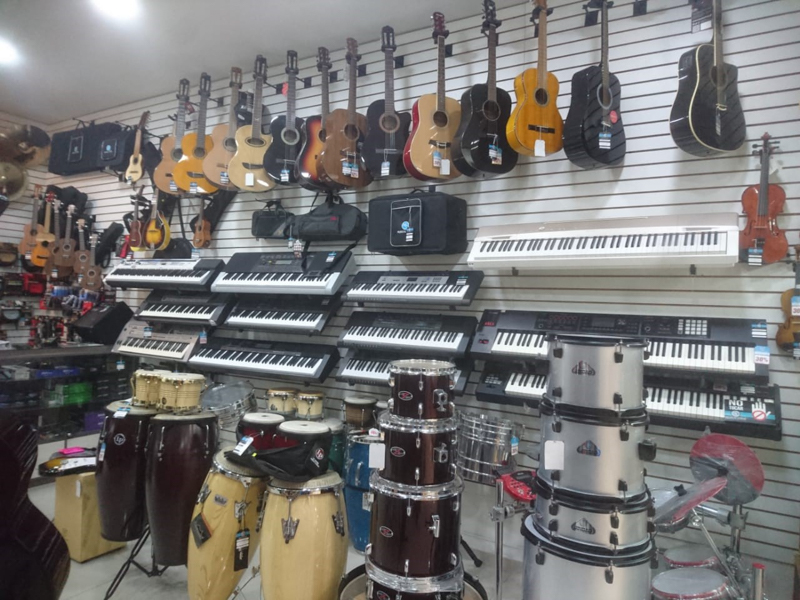

¿A qué nos dedicamos?
Ofrecemos una experiencia completa para músicos y amantes de la música.
- Venta de instrumentos musicales
- Servicio de luthier
- Clases de música
Esta página ofrece los mejores servicios de música, desde instrumentos hasta servicio de luthier.

Ofrecemos una experiencia completa para músicos y amantes de la música.
También contamos con asesoría personalizada para cada proyecto musical.
Nos encontramos cerca de la estación San Antonio en Medellín, Antioquia & ofrecemos atención personalizada para cada cliente.
Tu próxima experiencia musical empieza aquí.